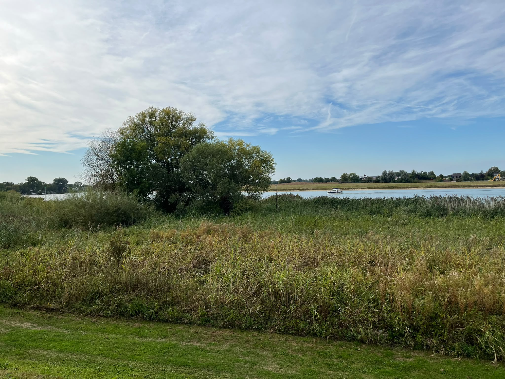
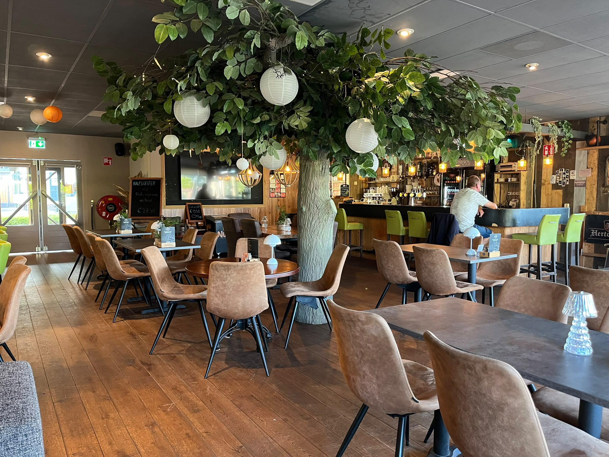
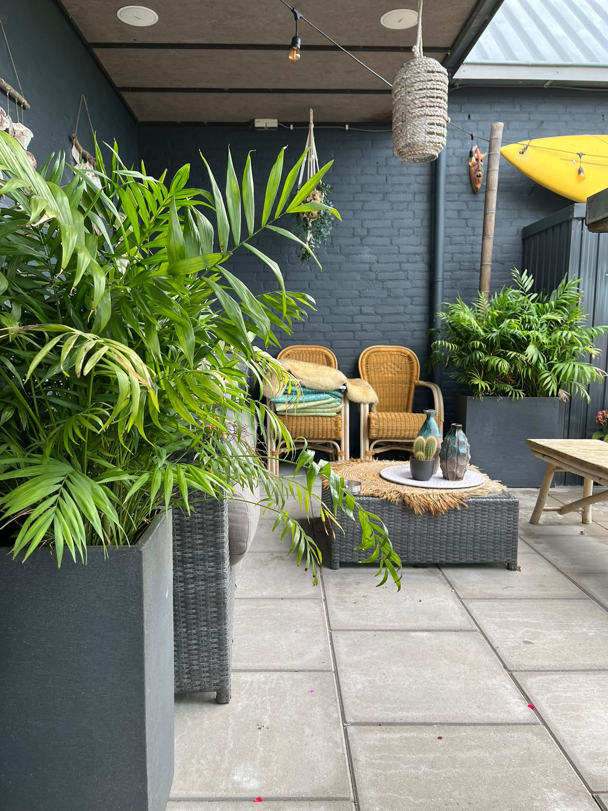

Maas en Vrienden
De naam zegt alles
Onze naam is niet zomaar gekozen. De Maas is de rivier waar ons dorp aan ligt. En vrienden, dat word je hier snel. Of je nu uit de buurt komt, op de fiets voorbijkomt of op de camping verderop staat.
Voor ons is uit eten meer dan alleen eten. Het gaat ook om rustig de tijd nemen, een goed gesprek aan tafel en je welkom voelen. Daar letten we op, in de keuken en in de bediening.

Gastvrijheid
Iedereen is welkom aan onze tafels. Gewoon gastvrij, zonder poespas.
Huisgemaakt
Onze gerechten maken we met zorg en verse ingrediënten. Eerlijk eten, vol smaak.
Sfeer
Een warm houten interieur, een praatje aan de bar en een terras waar een middag zo voorbij is.
Andel aan de Maas
Een rustig dorp, een rivier vol karakter
Andel is een dorp in het Land van Heusden en Altena, aan de Afgedamde Maas. Rondom liggen dijken, polders en boomgaarden. Hier bepalen het water en de seizoenen het tempo, niet de klok.
Die rust merk je ook bij ons aan tafel. Fietsers en wandelaars stoppen hier voor een pauze, gezinnen komen langs na een dag buiten en gasten van camping De Hoge Waard weten de weg inmiddels goed. Allemaal mensen die, net als wij, houden van goed eten op een mooie plek.
Ontdek de camping
Onze reis
Hoe wij zijn geworden wie we zijn
Stap voor stap hebben we een plek gebouwd waar mensen graag terugkomen. Vaak zit het in de kleine dingen.
-
Het begin
Het begon met een idee
We wilden een plek waar iedereen zich welkom voelt, met eerlijk eten en tijd voor een goed gesprek.
-
De keuken
Focus op huisgemaakte smaak
Van de soep van de week tot spareribs: onze kaart draait om verse ingrediënten en gerechten die we met aandacht maken.
-
Het terras
Buiten genieten aan de dijk
Zodra de zon schijnt, gaan de tafels naar buiten. Het terras werd al snel het favoriete plekje van veel vaste gasten.
-
Vandaag
Een vaste pleisterplaats
Inmiddels zijn we een vertrouwd adres voor buurtbewoners, fietsers, wandelaars en campinggasten uit de wijde omgeving.
Proef de sfeer
Warm, landelijk en gezellig
Zo ziet het eruit bij Maas en Vrienden: binnen aan de houten bar en buiten op het terras.



